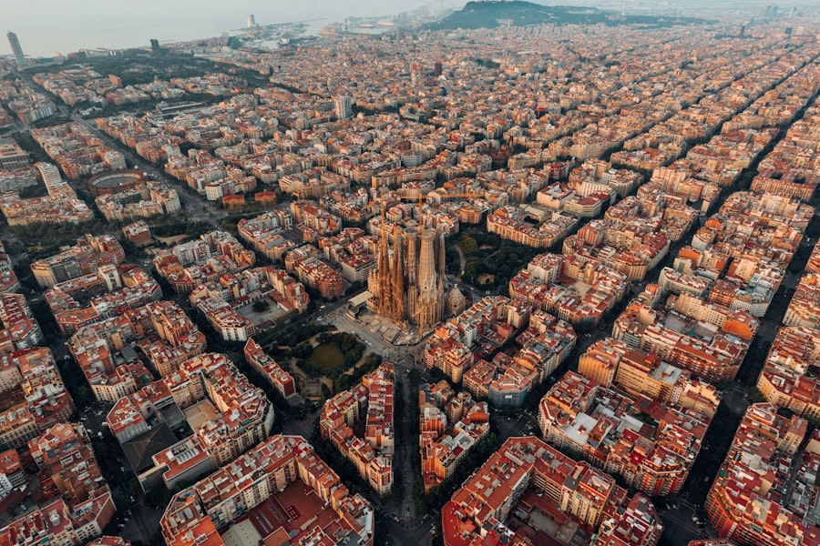

⏱ מהנמל במונית ~20–30 דק׳ · במטרו ~35–45 דק׳
סגרדה פמיליה
כנסיית העל של גאודי בברצלונה — בבנייה יותר ממאה שנה. בפנים אור צבעוני מדהים דרך ויטראז׳ים. חובה כרטיס מתוזמן.
בימי ראשון נפתחת לתיירים לרוב מ־~10:30 — בדקו שעת הכרטיס.